Pathfinding is the process of moving a character along a logical path to reach a destination, avoiding obstacles and (optionally) hazardous materials or defined regions.
To assist with pathfinding layout and debugging, Studio can render a navigation mesh. Colored areas show where a character can walk or swim, while non-colored areas are considered blocked. The small arrows indicate areas where a character must jump to reach.
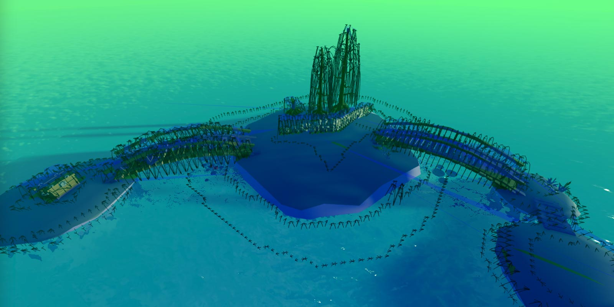
To enable or disable the mesh:
- Open Studio’s settings (File → Studio Settings…).
- In the Studio tab, enable the Show Navigation Mesh setting.
Creating Paths
Pathfinding is initiated through PathfindingService and its PathfindingService/CreatePath|CreatePath function.
local PathfindingService = game:GetService("PathfindingService")
local path = PathfindingService:CreatePath()
PathfindingService/CreatePath|CreatePath accepts an optional table of parameters which fine-tune how the character (agent) moves along the path.
| Key |
Description |
Type |
Default |
| AgentRadius |
Agent radius, in studs. Useful for determining the minimum separation from obstacles. |
integer |
2 |
| AgentHeight |
Agent height, in studs. Empty space smaller than this value, like the space under stairs, will be marked as non-traversable. |
integer |
5 |
| AgentCanJump |
Whether off-mesh links for jumping are allowed. |
boolean |
true |
| WaypointSpacing |
Spacing between intermediate waypoints in path. If set to math.huge, there will be no intermediate waypoints, only “inflection points.” |
number |
4 |
| Costs |
Table of materials or defined PathfindingModifier|PathfindingModifiers and their "cost" for traversal. Useful for making the agent prefer certain materials/regions over others. See Pathfinding Modifiers for details. |
table |
nil |
local PathfindingService = game:GetService("PathfindingService")
local path = PathfindingService:CreatePath({
AgentRadius = 3,
AgentHeight = 6,
AgentCanJump = false,
Costs = {
Water = 20
}
})
Moving Along Paths
This section uses the following pathfinding script for the player’s character. To test while reading:
- Copy the following code into a
LocalScript within StarterCharacterScripts.
- On line 11, change the
DataType/Vector3 destination to a point that the starting character will be able to reach through pathfinding.
local PathfindingService = game:GetService("PathfindingService")
local Players = game:GetService("Players")
local RunService = game:GetService("RunService")
local path = PathfindingService:CreatePath()
local player = Players.LocalPlayer
local character = player.Character
local humanoid = character:WaitForChild("Humanoid")
local TEST_DESTINATION = Vector3.new(100, 0, 100)
local waypoints
local nextWaypointIndex
local reachedConnection
local blockedConnection
local function followPath(destination)
-- Compute the path
local success, errorMessage = pcall(function()
path:ComputeAsync(character.PrimaryPart.Position, destination)
end)
if success and path.Status == Enum.PathStatus.Success then
-- Get the path waypoints
waypoints = path:GetWaypoints()
-- Detect if path becomes blocked
blockedConnection = path.Blocked:Connect(function(blockedWaypointIndex)
-- Check if the obstacle is further down the path
if blockedWaypointIndex >= nextWaypointIndex then
-- Stop detecting path blockage until path is re-computed
blockedConnection:Disconnect()
-- Call function to re-compute new path
followPath(destination)
end
end)
-- Detect when movement to next waypoint is complete
if not reachedConnection then
reachedConnection = humanoid.MoveToFinished:Connect(function(reached)
if reached and nextWaypointIndex < #waypoints then
-- Increase waypoint index and move to next waypoint
nextWaypointIndex += 1
humanoid:MoveTo(waypoints[nextWaypointIndex].Position)
else
reachedConnection:Disconnect()
blockedConnection:Disconnect()
end
end)
end
-- Initially move to second waypoint (first waypoint is path start; skip it)
nextWaypointIndex = 2
humanoid:MoveTo(waypoints[nextWaypointIndex].Position)
else
warn("Path not computed!", errorMessage)
end
end
followPath(TEST_DESTINATION)
Computing the Path
After you’ve created a valid path with PathfindingService/CreatePath, you need to compute the path by calling Path/ComputeAsync with a DataType/Vector3 for both the starting point and destination.
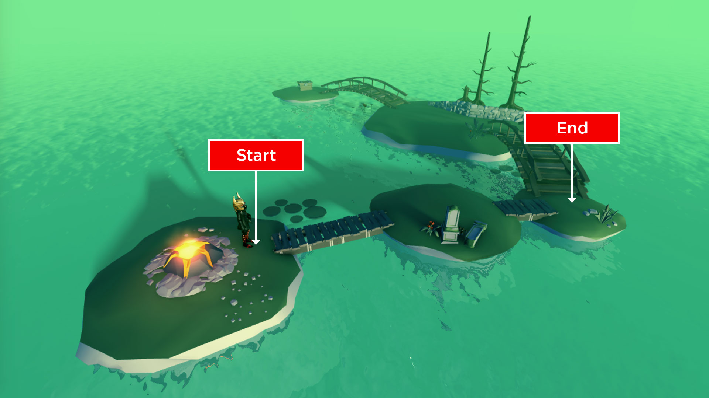
local path = PathfindingService:CreatePath()
local player = Players.LocalPlayer
local character = player.Character
local humanoid = character:WaitForChild("Humanoid")
local TEST_DESTINATION = Vector3.new(100, 0, 100)
local waypoints
local nextWaypointIndex
local reachedConnection
local blockedConnection
local function followPath(destination)
-- Compute the path
local success, errorMessage = pcall(function()
path:ComputeAsync(character.PrimaryPart.Position, destination)
end)
Getting Waypoints
Once the Path is computed, it will contain a series of waypoints that trace the path from start to end. These points can be gathered with the Path/GetWaypoints|GetWaypoints function.
local waypoints
local nextWaypointIndex
local reachedConnection
local blockedConnection
local function followPath(destination)
-- Compute the path
local success, errorMessage = pcall(function()
path:ComputeAsync(character.PrimaryPart.Position, destination)
end)
if success and path.Status == Enum.PathStatus.Success then
-- Get the path waypoints
waypoints = path:GetWaypoints()
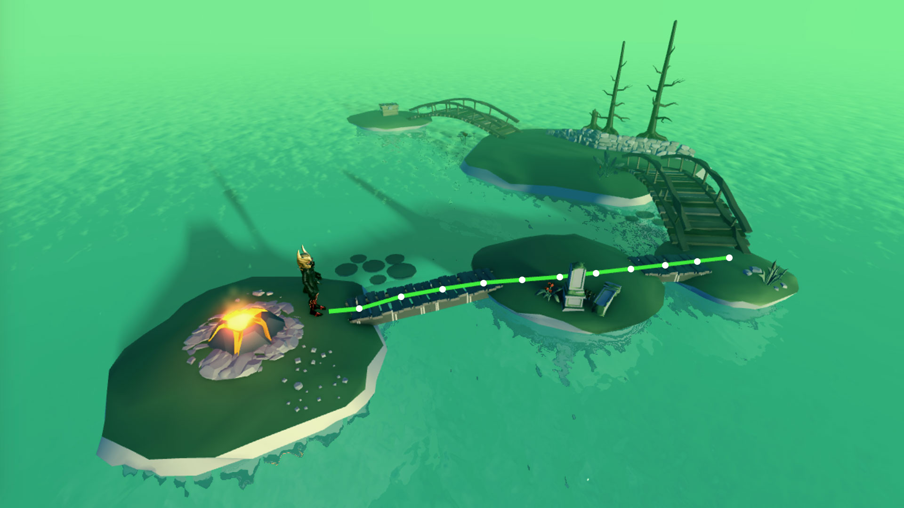
Path Movement
Each waypoint consists of both a Position (DataType/Vector3) and Action (Enum/PathWaypointAction). To move a character containing a Humanoid, like a typical Roblox character, the easiest way is to call Humanoid/MoveTo from waypoint to waypoint, using the Humanoid/MoveToFinished|MoveToFinished event to detect when the character reaches each waypoint.
-- Detect when movement to next waypoint is complete
if not reachedConnection then
reachedConnection = humanoid.MoveToFinished:Connect(function(reached)
if reached and nextWaypointIndex < #waypoints then
-- Increase waypoint index and move to next waypoint
nextWaypointIndex += 1
humanoid:MoveTo(waypoints[nextWaypointIndex].Position)
else
reachedConnection:Disconnect()
blockedConnection:Disconnect()
end
end)
end
-- Initially move to second waypoint (first waypoint is path start; skip it)
nextWaypointIndex = 2
humanoid:MoveTo(waypoints[nextWaypointIndex].Position)
else
warn("Path not computed!", errorMessage)
end
end
Handling Blocked Paths
Many Roblox worlds are dynamic — parts might move or fall, floors may collapse, etc. This can block a computed path and prevent the character from reaching its destination. To handle this, you can connect the Path/Blocked|Blocked event to the Path object and re-compute the path around whatever blocked it.
local reachedConnection
local blockedConnection
local function followPath(destination)
-- Compute the path
local success, errorMessage = pcall(function()
path:ComputeAsync(character.PrimaryPart.Position, destination)
end)
if success and path.Status == Enum.PathStatus.Success then
-- Get the path waypoints
waypoints = path:GetWaypoints()
-- Detect if path becomes blocked
blockedConnection = path.Blocked:Connect(function(blockedWaypointIndex)
-- Check if the obstacle is further down the path
if blockedWaypointIndex >= nextWaypointIndex then
-- Stop detecting path blockage until path is re-computed
blockedConnection:Disconnect()
-- Call function to re-compute new path
followPath(destination)
end
end)
Paths may become blocked somewhere behind the agent, but that doesn't mean the agent should stop moving. The conditional statement on line 30 confirms that the path is re-computed only if the blocked waypoint is ahead of the agent.
Pathfinding Modifiers
By default, Path/ComputeAsync returns the shortest path between the starting point and destination (with the exception that it attempts to avoid jumps). This can look unnatural in some situations — for instance, a path can go through water rather than over a nearby bridge, just because the path through water is geometrically shorter.
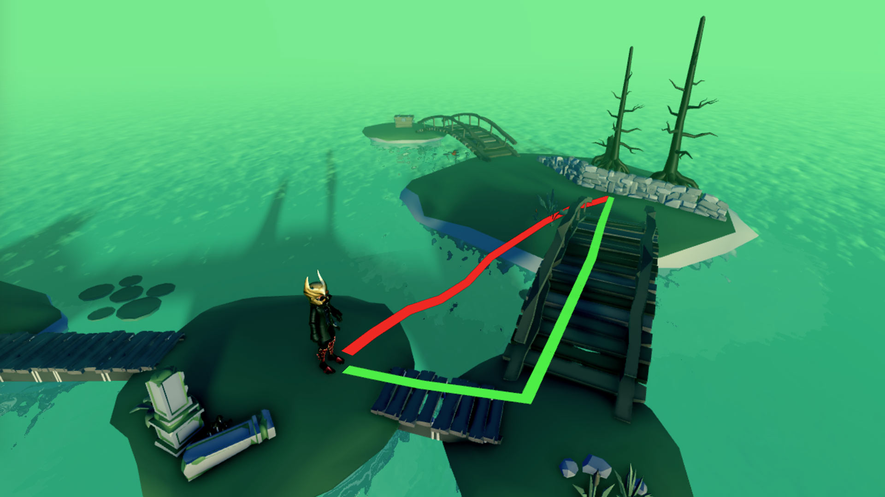
To optimize pathfinding even further, you can include pathfinding modifiers in the PathfindingService/CreatePath|CreatePath parameters and compute smarter paths across various materials or around defined regions.
local PathfindingService = game:GetService("PathfindingService")
local Players = game:GetService("Players")
local RunService = game:GetService("RunService")
local path = PathfindingService:CreatePath({
Costs = {}
})
Materials
When working with Terrain and BasePart materials, costs can be directly defined by the material name.
- Locate valid
enum/Material|Material names such as Water or Neon.
- Add matching keys to the
Costs table along with numeric values. All materials have a default cost of 1 and any material can be defined as non-traversable by setting its value to math.huge.
local PathfindingService = game:GetService("PathfindingService")
local Players = game:GetService("Players")
local RunService = game:GetService("RunService")
local path = PathfindingService:CreatePath({
Costs = {
Water = 20,
Mud = 5,
Neon = math.huge
}
})
Defined Regions
In some cases, material preference is not enough. For example, you might want characters to avoid a defined region, regardless of the materials underfoot. This can be achieved by adding a PathfindingModifier to a part.
- Create an anchored part around the dangerous region. Make sure its
BasePart/CanCollide|CanCollide property is set to false.
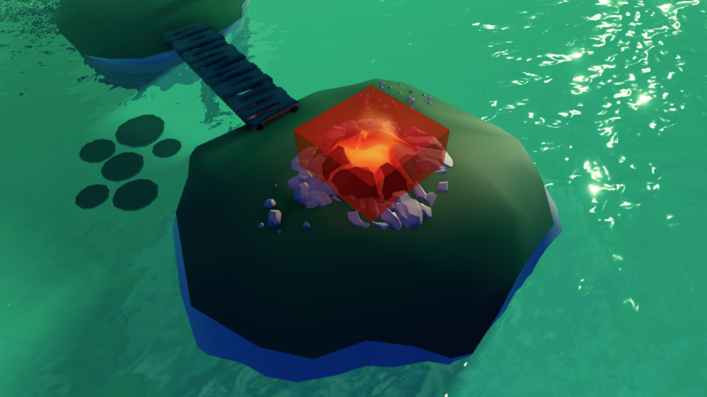
- Insert a
PathfindingModifier instance onto the part.
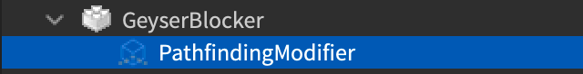
- Select the new instance, locate its
PathfindingModifier/Label|Label property, and assign a meaningful name like DangerZone.
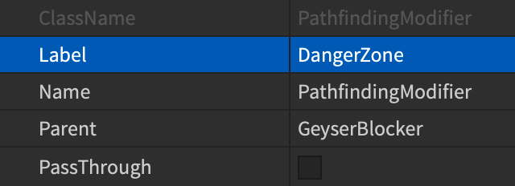
- Add a matching key to the
Costs table along with a numeric value. A modifier can be defined as non-traversable by setting its value to math.huge.
local PathfindingService = game:GetService("PathfindingService")
local Players = game:GetService("Players")
local RunService = game:GetService("RunService")
local path = PathfindingService:CreatePath({
Costs = {
DangerZone = math.huge
}
})
Ignoring Obstacles
In some cases, it’s useful to pathfind past/through solid obstacles, as if the obstacles didn’t exist. For example, if a zombie NPC “hears” a character and tries to find it, but the character is hiding behind a door, Path/ComputeAsync will fail.
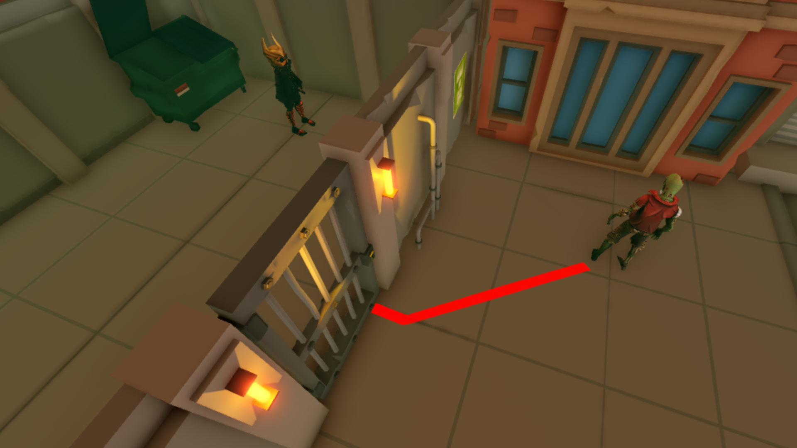
To compute a path that ignores the door, you can use a PathfindingModifier with PathfindingModifier/PassThrough|PassThrough enabled.
- Create an anchored part around the door. Make sure its
BasePart/CanCollide|CanCollide property is set to false.
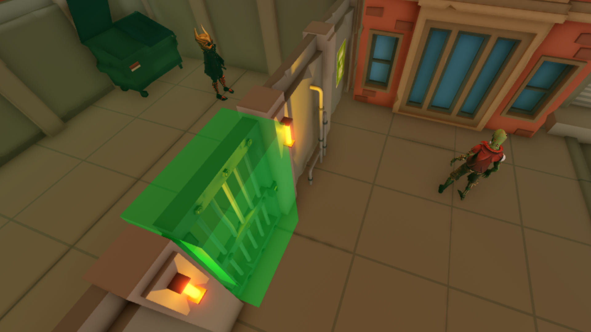
- Insert a
PathfindingModifier instance onto the part.
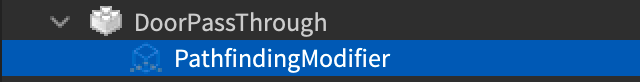
- Select the new instance and enable its
PathfindingModifier/PassThrough|PassThrough property.
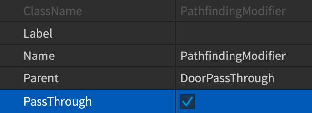
Now, when the same path is computed, it will extend beyond the door and you can move the zombie toward the player.
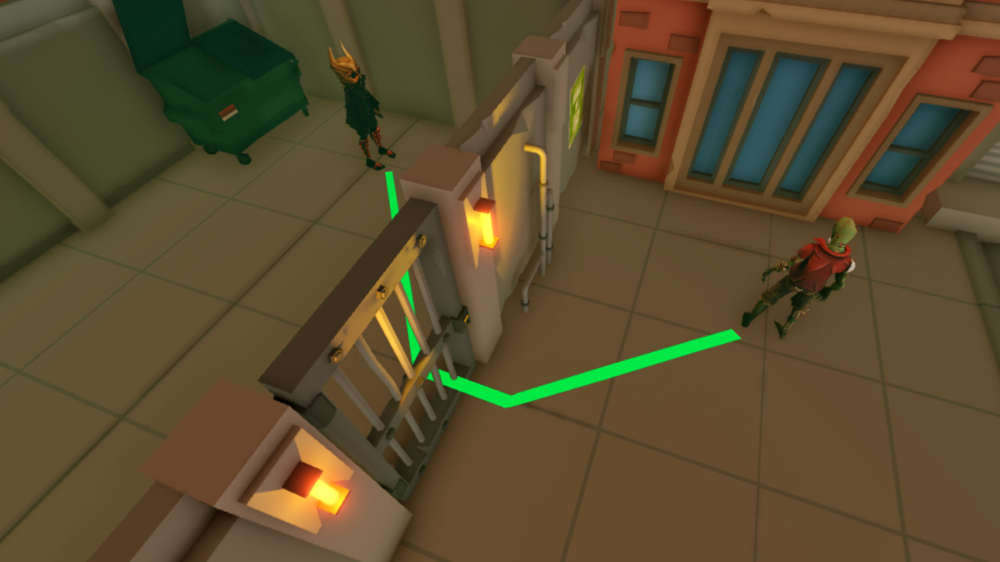
Pathfinding Links
Sometimes it’s necessary to find a path across a space that cannot be normally traversed, such as up a ladder or across a chasm, and perform a custom action to reach the next waypoint. This can be achieved through the PathfindingLink object.
Using the island example from above, you can make the agent use a boat instead of walking across all of the bridges.
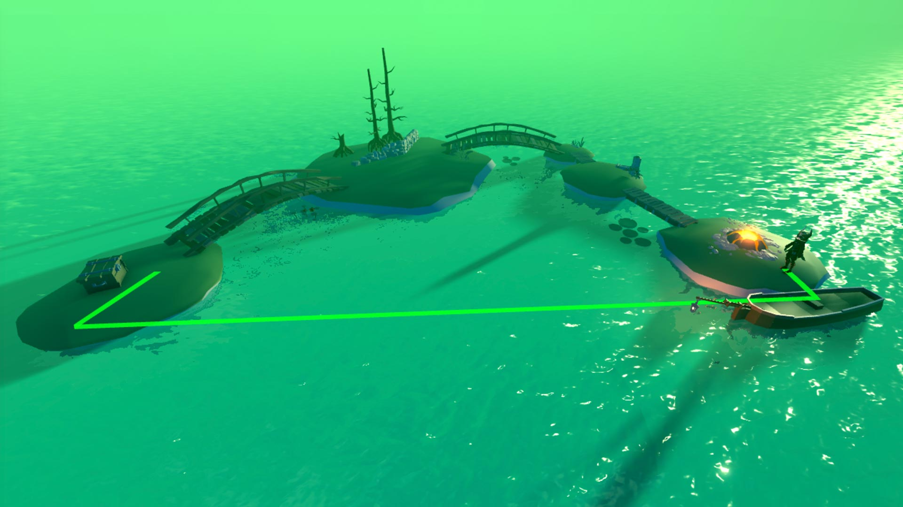
- Create two
Attachment|Attachments, one on the boat’s seat and one near the boat’s landing point.
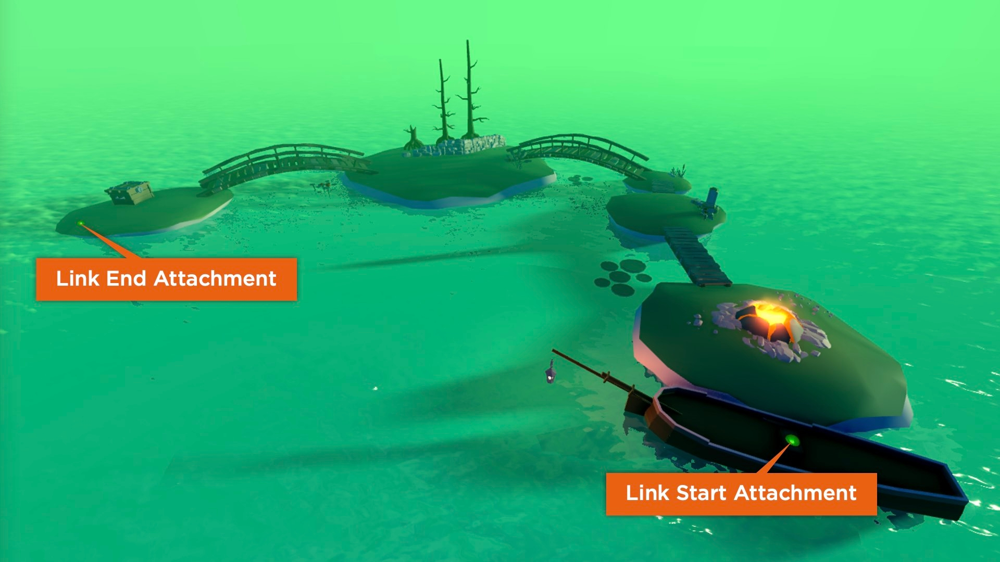
- Create a
PathfindingLink object in the workspace.
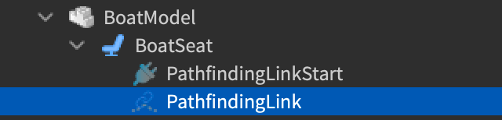
- Select the new instance and assign its Attachment0 and Attachment1 properties to the starting and ending attachments respectively.
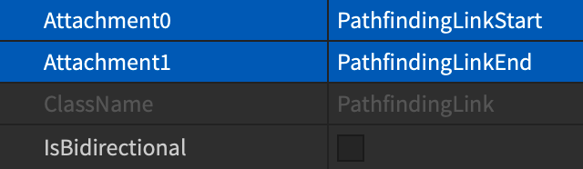
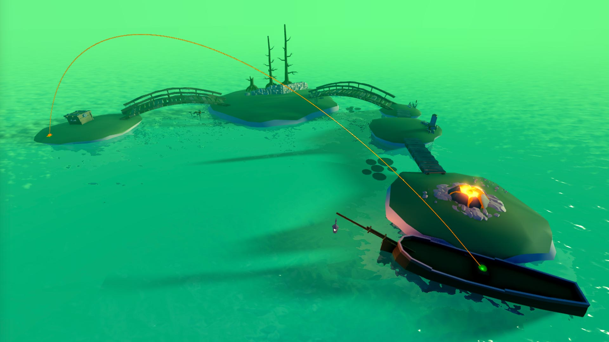
- Assign a meaningful name like UseBoat to its Label property. This name will be used as a flag in the pathfinding script to trigger a custom action when the agent reaches the starting link point.
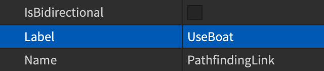
- Add an entry to the
Costs table for the same PathfindingLink/Label property name and assign a lower value than Water.
local PathfindingService = game:GetService("PathfindingService")
local Players = game:GetService("Players")
local RunService = game:GetService("RunService")
local path = PathfindingService:CreatePath({
AgentCanJump = false,
Costs = {
Water = 20,
UseBoat = 1
}
})
- In the event which fires when a waypoint is reached, add a custom check for the UseBoat modifier and take a different action than
Humanoid/MoveTo|Humanoid:MoveTo() — in this case, calling a function to seat the agent in the boat, move the boat across the water, and continue the agent’s path upon arrival at the destination island.
-- -- Detect when movement to next waypoint is complete
if not reachedConnection then
reachedConnection = humanoid.MoveToFinished:Connect(function(reached)
if reached and nextWaypointIndex < #waypoints then
-- Increase waypoint index and move to next waypoint
nextWaypointIndex += 1
-- Use boat if waypoint modifier ID is "UseBoat"
if waypoints[nextWaypointIndex].Label == "UseBoat" then
useBoat()
-- Otherwise, move to next waypoint
else
humanoid:MoveTo(waypoints[nextWaypointIndex].Position)
end
else
reachedConnection:Disconnect()
blockedConnection:Disconnect()
end
end)
end
function useBoat()
local boat = workspace.BoatModel
humanoid.Seated:Connect(function()
-- Start boat moving if agent is seated
if humanoid.Sit == true then
task.wait(1)
boat.CylindricalConstraint.Velocity = 5
end
-- Detect constraint position in relation to island
local boatPositionConnection
boatPositionConnection = RunService.Heartbeat:Connect(function()
-- Stop boat when next to island
if boat.CylindricalConstraint.CurrentPosition >= 94 then
boatPositionConnection:Disconnect()
boat.CylindricalConstraint.Velocity = 0
task.wait(1)
-- Unseat agent and continue to destination
humanoid.Sit = false
humanoid:MoveTo(waypoints[nextWaypointIndex].Position)
end
end)
end)
end